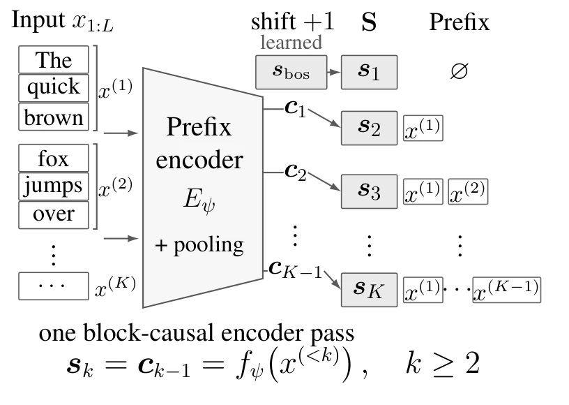
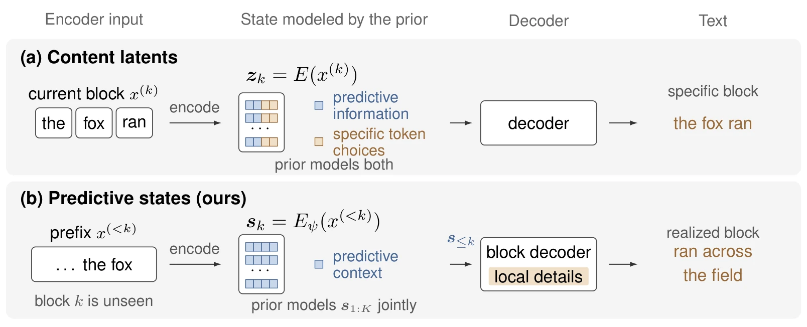
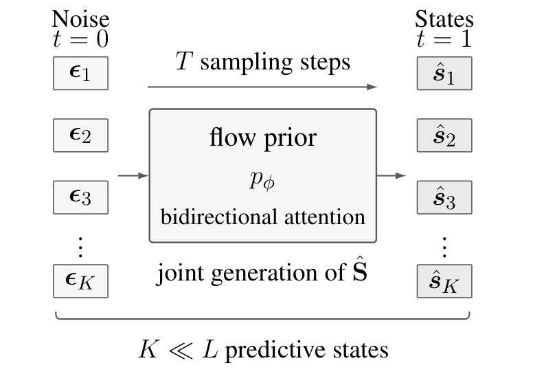
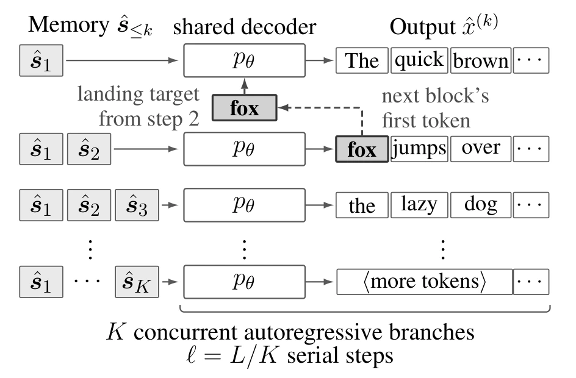
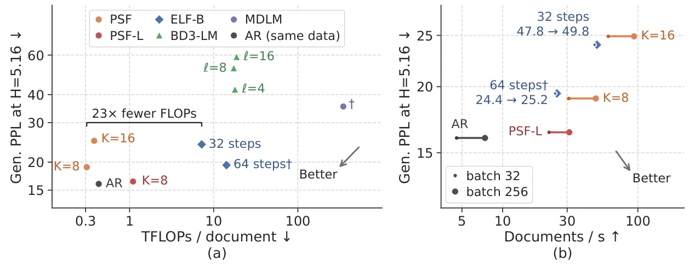
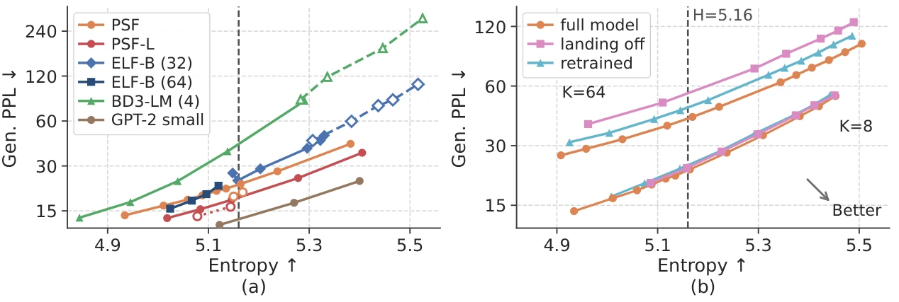
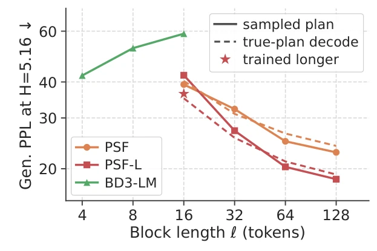

1Predictive states
One block-causal encoder pass pools each block. Shifting by one block gives sk = E(x(<k)), a summary of everything before block k; s1 is a learned begin state.
PSF · arXiv 2026
Georgia Institute of Technology
*Equal contribution
A predictive state sk = E(x(<k)) summarizes only the blocks before block k; block k itself is unseen. The prior models this predictive context, and the block decoder fills in the local token details.

In continuous diffusion language models (DLMs), latents generated by the diffusion prior are mapped almost deterministically to tokens, either by a decoder or through a token embedding matrix. Unlike in image generation, where visual details can vary continuously, the diffusion prior must capture fine-grained discrete token choices in continuous space, which can make the joint latent distribution difficult to model. We argue that generative roles should instead be divided: the diffusion prior should generate high-level predictive information, while the decoder should resolve the remaining token-level choices. Based on this view, we introduce Predictive-State Flows (PSF), which partitions a sequence into blocks and associates each block with a predictive state computed solely from the preceding context. A rectified-flow prior generates the sequence of predictive states, after which a block-causal decoder generates all blocks in parallel, autoregressively only within each block. This design reduces diffusion from L token-level states to K ≪ L predictive states and reduces token-level sequential depth to L/K. On unconditional OpenWebText generation, a 197M-parameter model with K = 8 achieves a generative perplexity of 22.8 at entropy 5.16 using 0.31 TFLOPs per 1024-token document, compared with 24.0 and 7.2 TFLOPs for ELF-B with 32 sampling steps. The corresponding measured operating points yield MAUVE@512 of 0.93 and 0.73, respectively. Controlled comparisons further show that content states, which additionally encode their own blocks, yield 8–16% higher generative perplexity than predictive states, and that replacing sampled predictive-state trajectories with a shared mean lowers MAUVE@512 by 0.11. These results suggest that latent design for continuous DLMs should consider not only how compactly text is represented, but also how generative roles are divided between the prior and the decoder.

One block-causal encoder pass pools each block. Shifting by one block gives sk = E(x(<k)), a summary of everything before block k; s1 is a learned begin state.

At generation time there is no text yet. A rectified-flow prior turns Gaussian noise into all K states jointly in 50 Euler steps: diffusion runs over K ≪ L states instead of L tokens.

Branch k reads s≤k and writes its block autoregressively; all K branches advance together, so the token-level sequential depth is L/K. From step 2 each branch also sees the next block's first token, its landing target.
| Model | Size | TFLOPs | H100 ms / doc | Gen. PPL ↓ | Entropy | MAUVE ↑ |
|---|---|---|---|---|---|---|
| AR, same data | 197M | 0.43 | 219.2 | 15.37 | 5.151 | 0.95 |
| MDLM | 170M | ≈347 | 16,386.7† | 35.37 | 4.897 | 0.44 |
| BD3-LM, block 4 | 170M | 17.9 | 1,416.5† | 23.75 | 5.039 | 0.61 |
| ELF-B, 32 steps | 105M | 7.2 | 20.9 | 23.97 | 5.158 | 0.73 |
| ELF-B, 64 steps | 105M | 14.2 | 40.9 | 19.42 | 5.096 | 0.89 |
| PSF K = 8, plain | 197M | 0.31 | 27.3 | 22.75 | 5.164 | 0.93 |
| PSF K = 8, states-only | 197M | 0.31 | 32.5 | 18.95 | 5.158 | 0.85 |
| PSF-L K = 8, plain | 677M | 1.10 | 40.2 | 17.79 | 5.146 | 0.90 |
| PSF-L K = 8, states-only | 677M | 1.10 | 45.0 | 15.98 | 5.144 | 0.89 |



git clone https://github.com/jinjinhe2001/Predictive-State-Flows-for-Parallel-Language-Generation.git
cd Predictive-State-Flows-for-Parallel-Language-Generation && pip install -r requirements.txt
hf download jinjinhe2001/PSF-ParallelLM --include "psf_k8.pt" --local-dir checkpoints
python -m scripts.eval_gen --ckpt checkpoints/psf_k8.pt $(cat configs/models/psf_k8.args) \
$(cat configs/sampling/psf_k8.args) --save-texts outputs/texts_psf_k8The code repository has the training recipe (one script per model), evaluation scripts and the configs; the Hugging Face repository has all 11 checkpoints of the paper (PSF and PSF-L at K = 64, 32, 16, 8, the states-only priors and the same-data AR baseline).
@article{he2026psf,
title = {Rethinking the Roles of Diffusion and Decoding: Predictive-State Flows for Parallel Language Generation},
author = {He, Jinjin and Feng, Xinsong and Fu, Lucheng and Wang, Sinan and Zhu, Bo and Wang, Jiayun},
journal = {arXiv preprint arXiv:2610.12898},
year = {2026}
}